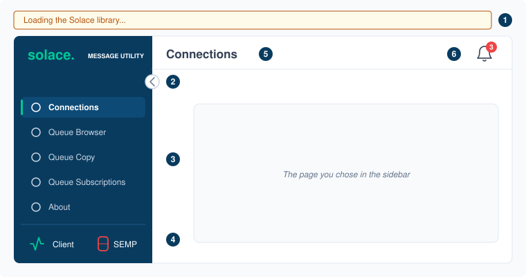
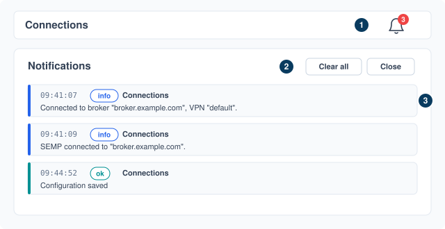
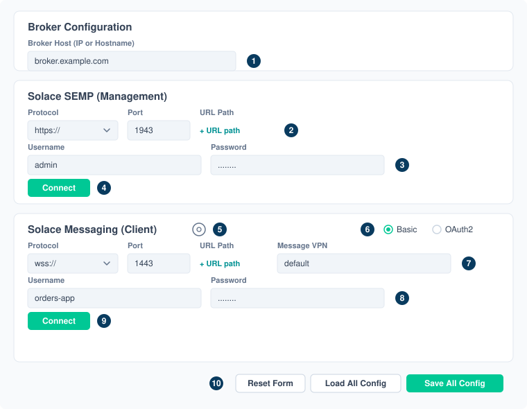
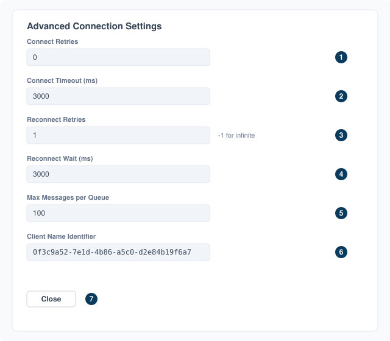
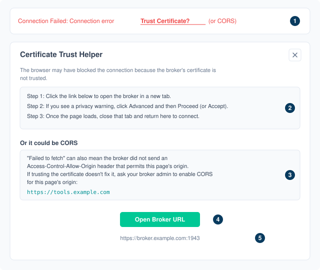

Connect the app to your Solace broker. The Connections page holds the two connections every other page relies on: the Solace client connection, which carries messages, and the SEMP connection, which reads the broker's management data.
Nothing else needs to be set up first. You need the address of a broker, a Message VPN on it, and an account for each connection. The other pages show Connection Required until the connection they need is up. A gateway in Provisioned mode adds a Provisioned tab to this page. The manual of that gateway's app describes it in its Provisioned connections chapter.
Every page of the app sits inside the same frame. Learn the frame once and it looks the same everywhere.

The two icons at the foot of the sidebar show at a glance which connections are up. They stay visible when the sidebar is collapsed, without their labels.
| Indicator | Red | Green |
|---|---|---|
| Client | The Solace client connection is not up. | The Solace client is connected. |
| SEMP | The SEMP connection is not up. | The SEMP connection is made. |
A message that appears as a toast is gone within a moment. The bell keeps what the app told you, so you can read it again. A red badge on the bell counts what you have not read yet; it reads 99+ above 99.

info, ok, warn or error), the page it concerns, and the text.Connected to broker "<host>", VPN "<vpn>"., Disconnected from broker "<host>", VPN "<vpn>"., SEMP connected to "<host>". and SEMP disconnected.No notifications yet. The drawer keeps the latest 200.
The two connections are independent. You can make either one, or both, in either order. Press the Enter key in a text box of a card to press that card's Connect button. The Broker Host belongs to the SEMP card, and the Messaging Host to the Messaging card.
A software or cloud broker answers SEMP and messaging on one host. A Solace appliance answers SEMP on its management address and messaging on another. The Solace Event Broker Type card at the top of the page says which of the two you have.
| Type | The host boxes |
|---|---|
| Software / Cloud | One host. Type it into Broker Host (IP or Hostname), in the SEMP card. The Messaging Host (IP or Hostname) box of the Messaging card is locked and shows the same host. The page opens with this choice, and the card reads One host serves both management and messaging. |
| Appliance | Two hosts. The box of the SEMP card is labelled Management Host (IP or Hostname). The box of the Messaging card is free: it starts with the host already typed, for you to replace with the appliance's messaging address. The card reads Management and messaging each take their own host. |
The Solace client connection opens a Web Messaging session (a WebSocket) to your broker. The Queue Browser chapter describes what it does with that session: read, forward and delete messages.
Connecting... and stays off until the broker answers.While the Solace client is connected, every field of the card is locked, and so is the host it uses: the Broker Host of a software or cloud broker, the Messaging Host of an appliance. Disconnect to change them.
| Field | What to enter |
|---|---|
| Broker Host (IP or Hostname), or Messaging Host (IP or Hostname) for an appliance | A host name such as broker.example.com, or an IPv4 address. An IPv6 address is not accepted. A bad value turns the box red with Invalid hostname or IP address. The Broker Host starts as localhost when nothing has been saved. |
| Protocol | wss:// (encrypted, the default) or ws://. The list also shows http:// and https://, but they are greyed out and cannot be chosen. A page opened over https:// without a gateway offers only wss://, because the browser blocks an unencrypted connection from it. |
| Port | The broker's WebSocket port, a whole number from 1 to 65535. A bad value turns the box red with Invalid port. |
| URL Path | Optional. A path placed after the port, for a broker behind a reverse proxy. The row shows only a small + URL path button, above the end of the row, until you press it. The box then joins the row after the port; the cross in the box empties it and hides it again. A leading / is added and a trailing one dropped. A path that is saved, loaded or typed always shows its box. |
| Message VPN | The Message VPN to join, for example default. It cannot be blank: Message VPN is required. |
| Username | The client username: up to 189 printable ASCII characters, without ? or *. Letter case counts. A blank value turns the box red with Field is required. A refused value turns it red too, and an error line under the card says why. |
| Password | The client password. The page does not check it, and it is never saved. |
The two joined buttons at the top right of the card pick how you sign in to the broker. The pressed one is the choice.
A red line under the Connect button says what went wrong. Look for these.
| The line says | What to do |
|---|---|
| A highlighted box and a short reason, with nothing sent | The form did not pass its checks. Correct the box that is red. |
Connection Failed: followed by the broker library's own text | The broker or the network refused the session. When the text includes Connection error and no gateway serves the page, a Trust Certificate? link appears. See the helper for a certificate below. |
Solace API not loaded. | The page could not find solclient.js. See Startup messages below. |
A line that begins Solace Web Messaging SDK is below the required version (10.18.3) | The solclient.js beside the page is too old. Use version 10.18.3 or newer. |
SEMP is the broker's management interface. The page connects to its SEMP v2 REST API and uses it to read facts about the broker, such as which queues exist. The pages that list a broker's queues and subscriptions need it. A SEMP connection is not a standing session: the page checks your account with one request, and then sends each later request with the same account.
Connecting... while the page waits.The fields lock while SEMP is connected. The Broker Host of a software or cloud broker stays locked while either connection is up. An appliance's Management Host is locked by the SEMP connection alone.
| Field | What to enter |
|---|---|
| Protocol | https:// (the default) or http://. A page opened over https:// without a gateway offers only https://. |
| Port | The broker's SEMP port, a whole number from 1 to 65535. |
| URL Path | Optional, and hidden until you press the small + URL path button, as in the Messaging card. The path goes after the port and before the SEMP address, for a broker behind a reverse proxy. |
| Username | The SEMP account name: 1 to 32 characters from A-Z, a-z, 0-9, underscore and hyphen. Without one the page says SEMP username is required. (the box says Username is required.). |
| Password | The account's password: 1 to 128 printable ASCII characters, no spaces, and none of these: colon, parentheses, double quote, semicolon, apostrophe, less-than and greater-than signs, comma, backtick, backslash, asterisk, ampersand, vertical bar. The page refuses anything else before it sends a request, and says why under the card. |
| The line says | What it means |
|---|---|
Authentication Failed (401). Check username/password. | The broker refused the account. |
SEMP Network Error: followed by a reason | The request failed, or the broker answered with an error such as 403 Forbidden. When the browser could not reach the broker at all, a Trust Certificate? link appears. |
SEMP Network Error: Connection timed out (15s). Check host and port. | The broker did not answer within 15 seconds. |
If the broker later refuses your SEMP account in the middle of your work, the page drops the SEMP connection: the button returns to Connect and the SEMP indicator turns red. Connect again with the right account.
Press the settings button beside the title of the Messaging card to open Advanced Connection Settings. The settings control the Solace client connection only. Close the dialog with Close, the Esc key or a click outside it.

-1 for infinite| Setting | Default | What it does |
|---|---|---|
| Connect Retries | 0 | How many times to try again when the first connect fails. The box marks 0 as its lowest value. |
| Connect Timeout (ms) | 10000 | How long one connect attempt may take, in milliseconds: the broker has that long to accept the connection and answer the login. The box marks 100 as its lowest value. |
| Reconnect Retries | 1 | How many times to try again when an open session drops. -1 never gives up. The box marks -1 as its lowest value. |
| Reconnect Wait (ms) | 3000 | The pause between those attempts, in milliseconds. The box marks 100 as its lowest value. |
| Max Messages per Queue | 100 | How many messages the Queue Browser keeps for each queue. A whole number from 1 to 10000. |
| Client Name Identifier | A generated identifier | The part of the session's client name that you choose. 1 to 100 characters, from letters, digits and !@#$%^&*-=_+/.,. |
The page does not check the first four numbers itself. Keep to the lowest values the boxes mark.
When a queue holds more messages than the limit, the oldest are dropped from the page as newer ones arrive. A higher limit keeps more history and uses more of the browser's memory. The Queue Browser chapter explains the second limit, a size limit of 32 MiB for each queue.
The value is checked as you type, and a message appears under the box: Must be a whole number., Must be at least 1. or Must not exceed 10000. The value you see when you press Connect is the one the session uses. You do not need to save it first. If the box holds an invalid value at that moment, the connect goes ahead with 100.
The broker lists each session by a client name. The page builds it as SolMsgUtil/YYYYMMDDHHMMSS/<identifier>, with the time you pressed Connect in the middle, so every session can be told apart in the broker's tools. The box fills itself with a generated identifier when you have none saved.
Allowed: letters, digits, and !@#$%^&*-=_+/.,. A value that is too long is refused with Must not exceed 100 characters.While the Solace client is connected, you can still open the dialog to see the values the session uses, but you cannot change them.
The three buttons at the foot of the page keep your connection details between visits. The page keeps one saved set of settings in your browser. It has no list of named profiles.
| Button | What it does |
|---|---|
| Save All Config | Saves what the form shows, replacing the earlier set. A toast reads Configuration saved. If the browser cannot store it, an error toast says that storage is unavailable. An invalid Max Messages per Queue or Client Name Identifier stops the save without a toast; open Advanced Settings to read the message. |
| Load All Config | Puts the saved set into the form and shows Configuration loaded. With nothing saved, nothing happens. The saved set is also loaded by itself each time you open the page. |
| Reset Form | Empties the form: the host, ports, paths, Message VPN, usernames and passwords. It sets the broker type to Software / Cloud, both protocols to wss:// and https://, sign-in to Basic, and the Client Name Identifier to a fresh one. The five numbers in Advanced Settings stay as they are, and so do the saved set and any live connection. A toast reads Form reset. |
The saved set belongs to the address the page is opened from. The same page opened from another address starts with no saved set.
A saved ws:// or http:// cannot be used by a page opened over https:// without a gateway. It loads as wss:// or https://, and a warning toast tells you so, for example ws:// is now wss://. The port may still be the unencrypted one, so check it.
A browser refuses a connection to a broker whose certificate it does not trust, for example one the broker signed itself. The page cannot tell you that in so many words, so a red error line offers a Trust Certificate? link, followed by (or CORS). Press it to open the Certificate Trust Helper. Close it with the cross at its top right, the Esc key or a click outside it.

The same failure can come from CORS: the broker did not send an Access-Control-Allow-Origin header that allows this page. If trusting the certificate does not help, ask your broker's administrator to allow the origin the dialog shows under Or it could be CORS.
When a gateway serves the app, a Messaging connect error does not offer the link, because your browser does not open the connection to the broker itself. A SEMP connect error that is a network failure still offers it.
The app needs the Solace library, solclient.js, to open the client connection. The banner above the app tells you how the library is doing.
| The banner says | What it means |
|---|---|
Loading the Solace library... | The library is being fetched. The banner goes when it has loaded. A Connect pressed meanwhile waits for it, for up to 30 seconds. |
| solclient.js not found. Please place it in the same directory. | The file is missing, or it loaded but did not define the library. Put solclient.js next to the page, or in a js folder beside it. |
| Outdated Library: Found Solclient and a version, required 10.18.3+. Connecting is disabled. | The library is older than the app accepts. Replace it with version 10.18.3 or newer. |
| The Solace library did not finish loading. Check that solclient.js is next to this page. | Nothing settled within 30 seconds. A late result still replaces this message. |
Where to get the file is in the deployment guide.
Loading... fills the page area until the first page is ready. If no page can start it reads No modules are available. Check the browser console.Module "<name>" failed to install. See the browser console for details. The other pages still work.Could not check whether this page is served by the gateway. and has a Retry button, which reloads the page. The form stays usable meanwhile, as for a page with no gateway. A plain "no gateway" answer shows no box.A gateway is a server that hosts this app and makes the connections to your broker for you. You use the form in the same way. What changes is who reaches the broker.
| Topic | Without a gateway | With a gateway |
|---|---|---|
| Who connects to the broker | Your browser. | The gateway. The broker need not be reachable from your browser. |
| What you type | The broker's protocol, host, port and path. | The same values. The page shows the same fields. |
Plain ws:// and http:// | Offered only when the page itself is not opened over https://. | Always offered. |
| CORS | The broker must allow this page's origin for SEMP. | Not needed. |
| Certificate Trust Helper, for a Messaging error | Offered by the Trust Certificate? link. | Not offered. |
Everything else on this page is the same: the fields and their checks, Advanced Settings, and saving and loading. The deployment guide describes Gateway mode.
When something goes wrong, the app writes what it did to the browser's developer tools console. Add logLevel to the address of the page to choose how much it writes, for example index.html?logLevel=DEBUG.
| Value | What you see |
|---|---|
DEBUG | Everything, with fine-grained detail of each step. |
INFO | The default: the main events, warnings and errors. |
WARN | Warnings and errors. |
ERROR | Errors only. |
SILENT | Nothing. |
The value can be in any letter case. A value the app does not know is ignored, and the default applies.